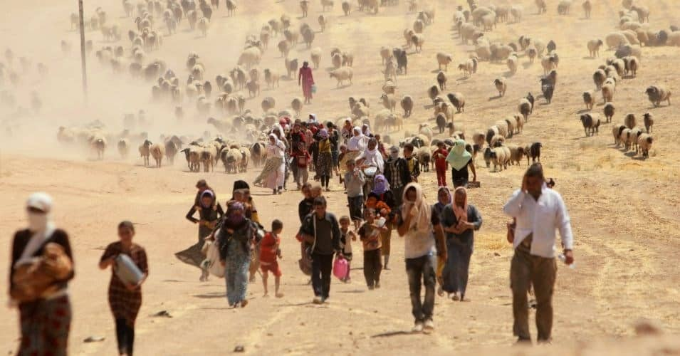

A lo largo de la historia han sido muchas las ocasiones en que se han producido grandes movimientos migratorios. Las personas migrantes pueden abandonar sus hogares por múltiples motivos, con la intención de encontrar un sitio mejor donde poder sobrevivir y asegurarse un buen futuro. Se produce una migración cuando un grupo social, sea humano o animal, realiza un traslado de su lugar de origen a otro donde considere que mejorará su calidad de vida. Implica la fijación de una nueva vida, en un entorno social, político y económico diferente y, en el caso de los animales un hábitat distinto, que sea más propicio para la subsistencia de la especie.
Asilo político: En ocasiones, la situación política de un Estado puede acarrear cierto grado de represión hacia la disidencia política. En este caso, un individuo disidente puede decidir abandonar el país por miedo a represalias (tales como encarcelamiento, torturas, etc.). Esto se conoce como asilo político.
Asilo humanitario o económico: Cuando el individuo decide migrar de su país de origen por motivos relacionados con la pobreza, se suele hablar de asilo humanitario o económico.
Migración cultural: En ocasiones, el migrante decide abandonar su país de origen hacia la búsqueda de una mejor educación o mejores oportunidades.
Migración familiar: Si el migrante toma la decisión de abandonar su país para reencontrarse con familiares que se encuentran en otro Estado, se suele hablar de migración por causas familiares.
Migración por causas bélicas: Cuando un país o región se encuentra bajo un conflicto bélico, la población puede decidir abandonar sus casas para escapar del peligro que supone la guerra, no solo en su vertiente puramente violenta, sino también por la escasez de recursos que provoca.
Migración por catástrofe humanitaria: Si una región o un país ha sido arrasado por una catástrofe natural, como un tsunami o un terremoto, las personas oriundas de ese sitio pueden migrar buscando rehacer sus vidas en un territorio más estable.
Dadas las variadas causas que hay detrás, la migración humana es un fenómeno complejo y repercute de manera muy diversa tanto en la sociedad de origen como en la receptora. Veamos las consecuencias de la migración, tanto desde el punto de vista de la persona migrante como desde un enfoque más social y cultural.
Económicas: Los movimientos migratorios pueden tener varias repercusiones, no únicamente en el país al que van a parar, sino también en el de origen. En muchas ocasiones las personas migran de forma multitudinaria, lo cual disminuye considerablemente la población de su país.
Esto supone una reducción del desempleo, dado que muchas personas migrantes deciden abandonar su país al ver que no logran encontrar trabajo y, los que se quedan, se benefician de la menor competencia laboral. Las personas migrantes envían dinero a sus familiares, ayudándoles en la economía familiar y permitiéndoles subsistir.
En cuanto al país receptor, la llegada de personas jóvenes permite que se ocupen empleos que la población nativa no está dispuesta a hacer, por ser trabajos poco cualificados y mal pagados. Sin embargo, también hay repercusiones negativas. Si el país de origen ya era pobre de por sí, el hecho de perder a personas económicamente activas supone un obstáculo añadido. También, al perderse población se pierden posibilidades de consumo y, aunque se envíe dinero a las familias, éste viene muy fraccionado, lo cual no les permite salir de la pobreza.
Culturales: Las personas migrantes tienen sus propias tradiciones, lengua, religión y formas de comportarse, las cuales pueden ser muy diferentes de las de la sociedad receptora. Esto puede ocasionar dos fenómenos, dependiendo de cómo sea la interacción entre los foráneos y los nativos.
La llegada de personas de otras culturas puede suponer un enriquecimiento de la sociedad receptora, volviéndose más abierta y plural al convivir diferentes grupos étnicos en ella.
Por otro lado, pueden surgir ideas xenófobas en la población nacional, que consideran que la llegada de extranjeros desvirtúa la sociedad, viéndolos como personas peligrosas y que contaminan la cultura propia o directamente la están haciendo desaparecer.
La sociedad de origen, al perder a una importante cantidad de jóvenes, se envejece, mientras que a la receptora le ocurre el proceso contrario. Esto es debido a que la mayoría de migrantes tienen edades comprendidas entre los 25 y 35 años, los cuales pueden reproducirse en el nuevo país, incrementando la natalidad y fertilidad.
Políticas: La llegada de inmigrantes puede motivar la elaboración de leyes de inspiración xenófoba, como aquellas que prohíben el uso de vestimentas tradicionales de otros países o que niegan el derecho asistencial a las personas en situación irregular.
También pueden implantarse leyes que tienen el propósito de seleccionar a aquellos inmigrantes más útiles dependiendo de las necesidades del país.
Por ejemplo, si se necesita más investigación, se pueden otorgar visados a extranjeros científicos, técnicos o especializados en varias disciplinas. También se puede dejar entrar a inmigrantes con la finalidad de que ejerzan de mano de obra barata para construir infraestructuras a menor precio y más rápidamente.
Entre nacionales y extranjeros pueden haber tensiones que hagan que las personas nativas opten por ideologías cada vez más extremistas, votando a partidos cuya única aspiración es la de expulsar a los que no son del país, dejando de lado políticas sociales mucho más necesarias que beneficiarían de forma significativa a la sociedad receptora.